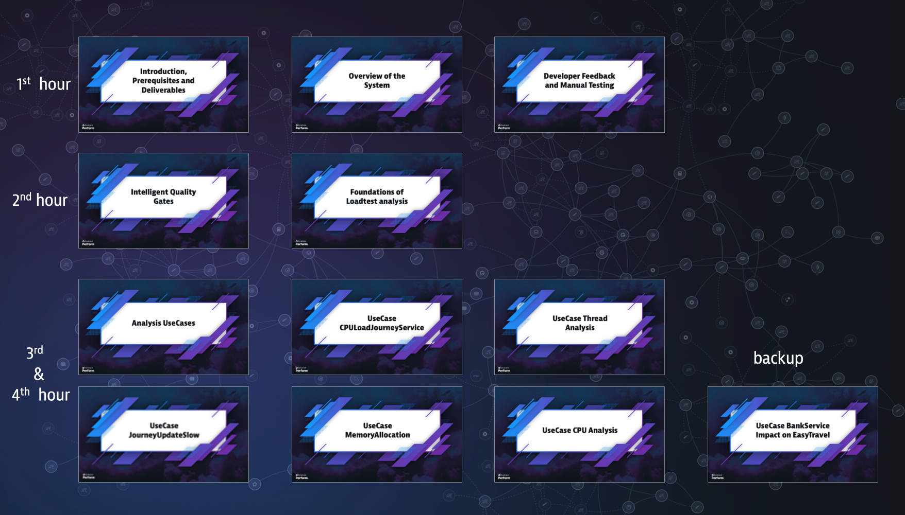
What we're covering/not covering
- This is not a product tutorial (although we will demo and show new features of the product)
- We will cover some best practices on Loadtesting and Release comparison so you can apply this in you company and help release better software faster.
- The software optimizations and analysis can be done in any technology that Dynatrace can monitor
- There is no need to be an Azure or Keptn expert and everything we are covering can be applied to ANY environment (e.g. Azure, GCP, Kubernetes, On-Prem, etc...) and any modern CI/CD Pipeline that can be triggered via REST.
What you will learn today
- Help you become more comfortable using Dynatrace to diagnose application problems, understand the service dependencies, the architecture and know how and where to optimize.
- Help you diagnose the overall health of an environment from thousands of services all the way to threads, exceptions and response times of a single transaction end-2-end through all layers (FullStack)
- Get Feedback on Transactions for Developers
- Do a Top Down-analysis and Bottom-Up (on single or multiple transactions)
- Understand the added-value for developers to have an automated qualitygate in the CI/CD pipeline.
- Make the diagnosis easy for others in your organization
- Not everybody needs to be a "Dynatrace Expert"
- Understand how you can leverage Davis so she helps you monitor and diagnose applications.
- Understand the value of automatic quality gates with performances as a self-service
- Best Practices for automatic loadtesting and quality gates. How to build SLI/SLOs for continuous release comparison.
- Integrate, compare and analyze Loadtests with Dynatrace
- Compare and analyze GarbageCollection, Memory Allocation, Survived Objects, ThreadGroups & blocking Threads as well as CPU Utilization for loadtests or any ondemand analysis for that matter.
Diagnosing the Health of an Environment
Leveraging tags and Management Zones you can get very fast and easy an understanding of UX, transactions, hosts, application network traffic, failures on the whole environment or on specific stages, departments, subcompanies, etc.
In this example you can get an overview of:
- the amount and health of databases, services, hosts and applications.
- amount of requests vs responsetime 95th percentile
- network status
- HTTP errors and failed transactions
- Database calls and time spent in database per transaction
- most failing services
- service throughput
- slowest services
- database calls per service
- service time spent in wait, lock, IO and CPU
- JVM CPU by ThreadGroup
- GC by Poolname
- Memory Allocation Objects by API
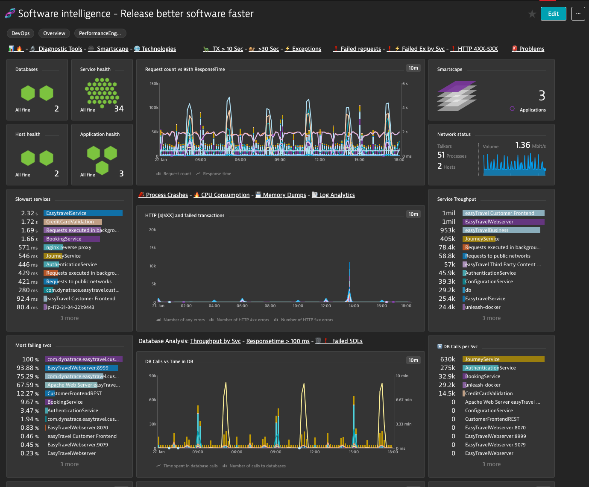
Let's get the big picture of the environment.
- Use the Management Zone
- Navigate into:
- Technologies
- Applications
- Smartscape
Introducing Diagnostic Tools
- Open Technologies
Top Requests
Search for:
- Only failed transactions
- Transactions with more than 10 seconds over the last 6 hours
- Transactions calling dynatrace.com
- Transactions that makes more than 100 database calls.
Top Database Statements
Search for:
- Do we have failing database statements?
- Which is the slowest database transaction of the day? Continue analysing with the outliers
- Which SQL hast the most Fetch count and wich the most Row count? Where is this transaction coming from? Which application and which user action is triggering this SQL?
Exceptions
⚠️ Exceptions are expensive and can cost unnecessary memory and CPU consumption. Having the ability to sort them by amount, impact and impacted services allows you to assign them to tickets in your backlog. Making your application continuously better.
Search for:
- All Exceptions of the day
- Failed exceptions
ProTip: Dynatrace has the ability to configure custom error detection for your services. If there is an BusinessException where you want to mark the transation failed so the failurerate increases, you can do this in the service error detection.
Let 👧 🧠 DAVIS work for you!
Feedback is one of the most important attributes on Software Development. The better, faster and reliable the feedback is, the better will the software be.
In this section we will see how developers can get feedback on real time from integration or production systems.
No more "well... it worked on my computer, is operations problem now 🤷♂️ "❗️
REST Sign-In
REST Sign-In (Create Account) EasyTravel
We are asked to test the REST Sign-In and Login functionality of Easytravel. To understand the flow of the transaction, response time and architecture. We are only given the REST Endpoint.
POST http://{{custom.easytravel_ip}}/easytravel/rest/signin
JSON Body
{
"firstName": "{{custom.developer_name}}",
"lastName": "{{custom.developer_name}} LastName",
"email": "{{custom.developer_name}}",
"password": "{{custom.developer_name}}",
"state": "Bayern",
"city": "Munich",
"street": "Main Street 1",
"door": "",
"phone": "+49123456789"
}
We are going to pass this attributes into the POST request.
HTTP Headers:
Content-Type: application/json
x-developer: yourname
For this we can use cURL, Postman or any REST tool. Here is an API Test already preconfigured for you 🚦 API TEST Template for SingIn
- The test consists of basically 2 steps, POST request and an assert.
- Modify the X-Developer Header with your_name_identifier.
- This value will be used as email and password for the creation of the SignIn. (just for keeping things simple)
Create an Account via REST
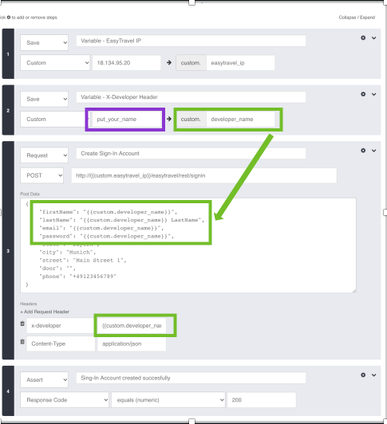
- Click on Test
- It should pass all 4 steps.
- Now, click on „Test„ again. Yes, with the same data. Let‘s try to create the same Sign-In Account.
- The test should fail. What error code did you get?
REST Log-In
REST Login (Log in to the created account) EasyTravel
POST http://{{custom.easytravel_ip}}/easytravel/rest/login
JSON Body
{
"username": "{{custom.developer_name}}",
"password": "{{custom.developer_name}}"
}
Login via REST
- Open the test 🚦 API TEST Template for Login
- Modify the developer name with your_name to the name where you created the account
- Click on Test
- You should have a succesfull test and the reponse returns the entered data from the Account.
REST Sign-In requests in Dynatrace
MDA FeedBack Developer
- Go to MDA and search the request by
{RequestAttribute:Developer} - Filter your requests and show the Service-Flow.
ServiceFlow of the Developer Requests
- Start the flow from the nginx reverse proxy.
- By not filtering the 3 requests (2x signin + 1x login) you'll see the flow of the 3.
Filter by the first correct sign-in
Let's analyze first the correct signin.
- Fiter by HTTP Code 200 + Request "sign" notice that you don't need to match the exact name of the request.
- Notice how Dynatrace shows detailed information from every service and inter-tiercalls as DB calls.
Response Time Hotspots Sign-In
Navigate with the Response Time Hotspots all the way to the Database. Follow the services. Notice the detailed information about the SQLs and even the Connection Acquisitions.
Difference between the 2 Sign-Ins
Can you notice the difference from the two Sign-in why the second Sign-in failed? That it got an HTTP 403 is obvious. But if you look at the purepaths in detail you'll notice that the select statement of the first Sign-In did not return any results from the database on the select statement hence it could create an account and subsequently an Insert was done. In the second attempt since there was a result (a row) returned, no Insert statement or new Account was created.
REST Login requests in Dynatrace
Service-flow Login
- Now show the flow of a Login.
- Notice again the intertier-calls how they add up, the contribution of each service and the infrastructure where it's running.
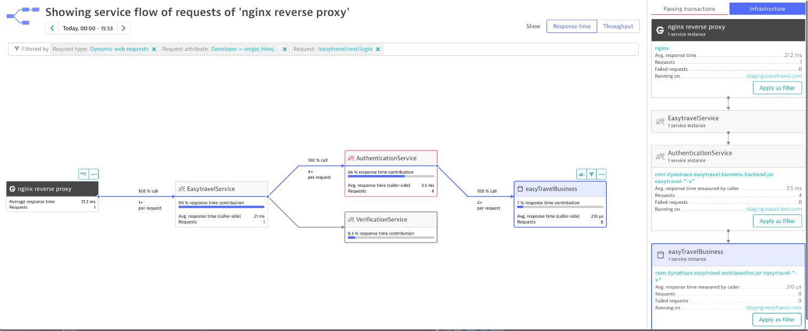
ResponseTime Hotspots Login
Open the ResponseTime Hotspots from the ReverseProxy. Notice the contribution from Tomcat the Calls to AuthenticationService (4x) and VerificationService (1x)
Notice the contribution by Method within the AuthenticationService and how it can tell us which method is taking the most time within a single transaction (even though we are moving in 2 digit ms time)
REST Validation with Dynatrace
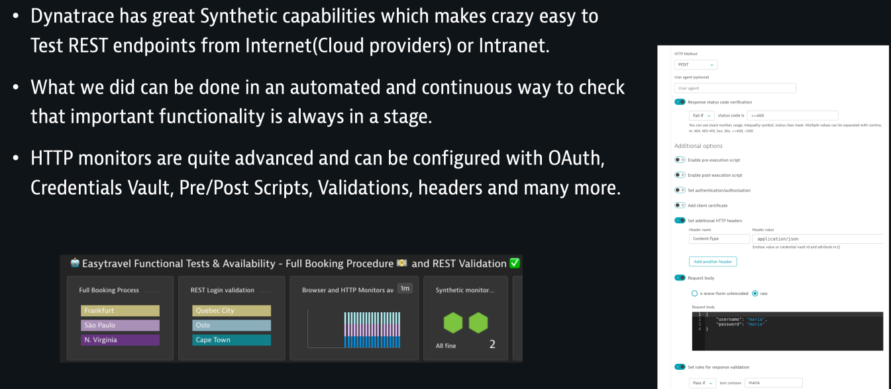
🧑🏻🏫 The presenter will explain with more detail
Full Browser Booking Validation with Dynatrace
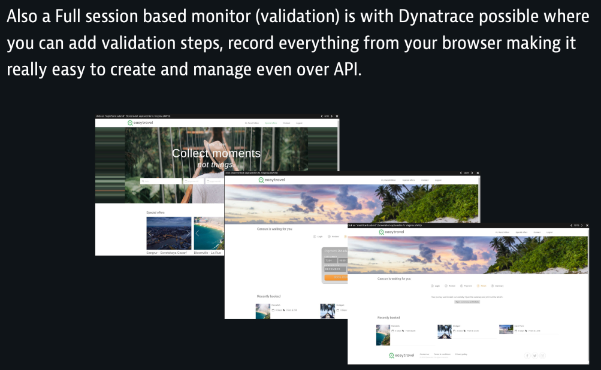
🧑🏻🏫 The presenter will explain with more detail
Automated Performance Validations
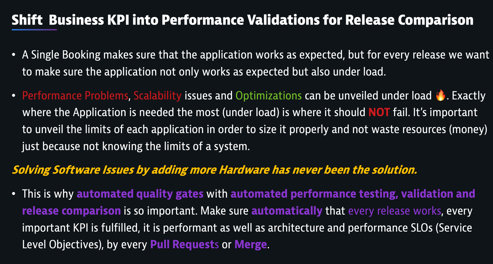
The basis of this section is for understanding the set-up and methodology behind automatic quality gates. There is a hughe amount of value building an automatic quality gate based on performance tests with release validations and comparisons. With best practices you can achieve validations on functional, architectural, infrastructure, performance and business levels, automatically.
This 🏎 speeds_up not only the delivery but also the quality of the software by detecting issues faster on code-changes being merged or pushed to a release branch. Dynatrace is continuously capturing on real-time high-resolution information through the whole stack and on all layers. This information can and should be used for optimizing your software continuously.
By building intelligent quality gates, you increase the quality of your software and free-up valuable resources (Performance Engineers and Developers) so they can focus on "Building Better Software Faster"
🧑🏻🏫 The presenter will explain with more detail
The Build Process

🧑🏻🏫 The presenter will explain with more detail
The quality gate in staging
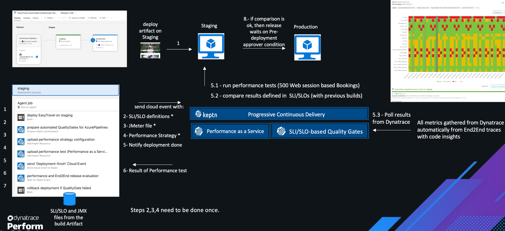
🧑🏻🏫 The presenter will explain with more detail
Explainer SLI/SLO-based Evaluation
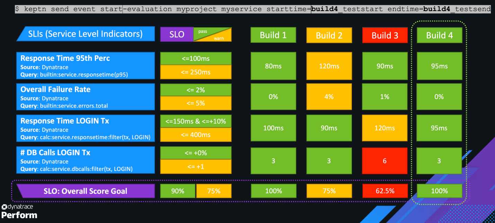
🧑🏻🏫 The presenter will explain with more detail
Best Practice SLI/SLO evaluation
Business KPI, Architectural, Functional and Performance validation
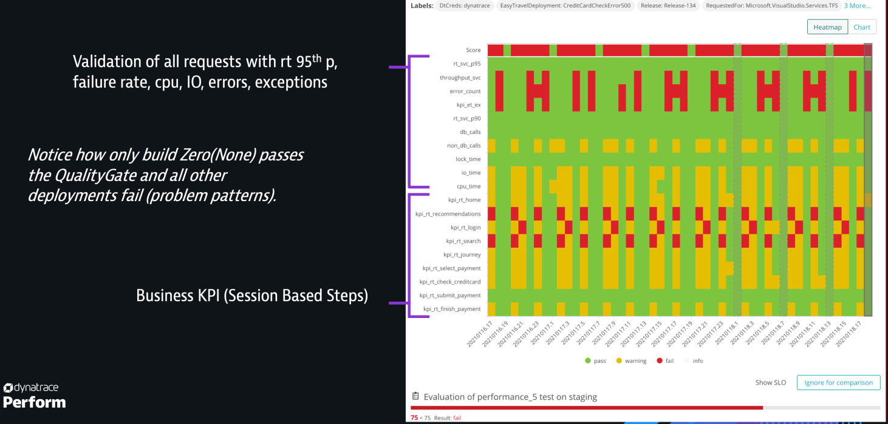
🧑🏻🏫 The presenter will explain with more detail
Release Validation Dashboard
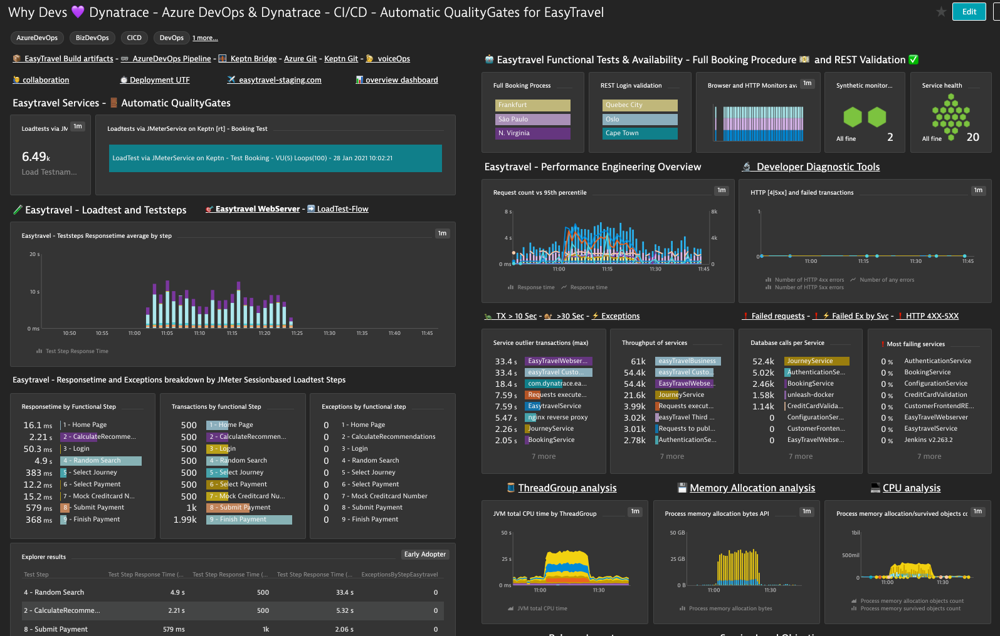
🧑🏻🏫 The presenter will explain with more detail
Deployment Overview
EasyTravel Continuous Deployment
case $h in
"12" | "06")
EASYTRAVELDEPLOYMENT="None"
;;
"01" | "07")
EASYTRAVELDEPLOYMENT="CPULoadJourneyService"
;;
"02" | "08")
EASYTRAVELDEPLOYMENT="DBSpammingAuthWithAppDeployment"
;;
"03" | "09")
EASYTRAVELDEPLOYMENT="LoginProblems"
;;
"04" | "10")
EASYTRAVELDEPLOYMENT="JourneyUpdateSlow"
;;
"05" | "11")
EASYTRAVELDEPLOYMENT="CreditCardCheckError500"
;;
esac
Foundations of Loadtest analysis
- Show the service flow of the "9 - Finish Payment" test step (of any release)
- Show the exceptions and the impacted TestSteps of a Loadtest of the last 6 hours.
The "EasyTravel Webserver" is the entrypoint for the sessionbased LoadTests (and the validation of Keptn based on the Tag easytravel-azdo). The Deployment events are displayed on this Service. Tip: For finding a specific load test with the deployment events on the service
- either display the events for the last 6 hours
- enter the time to a fix hour
08:00 to 09:00and then navigate back or forward
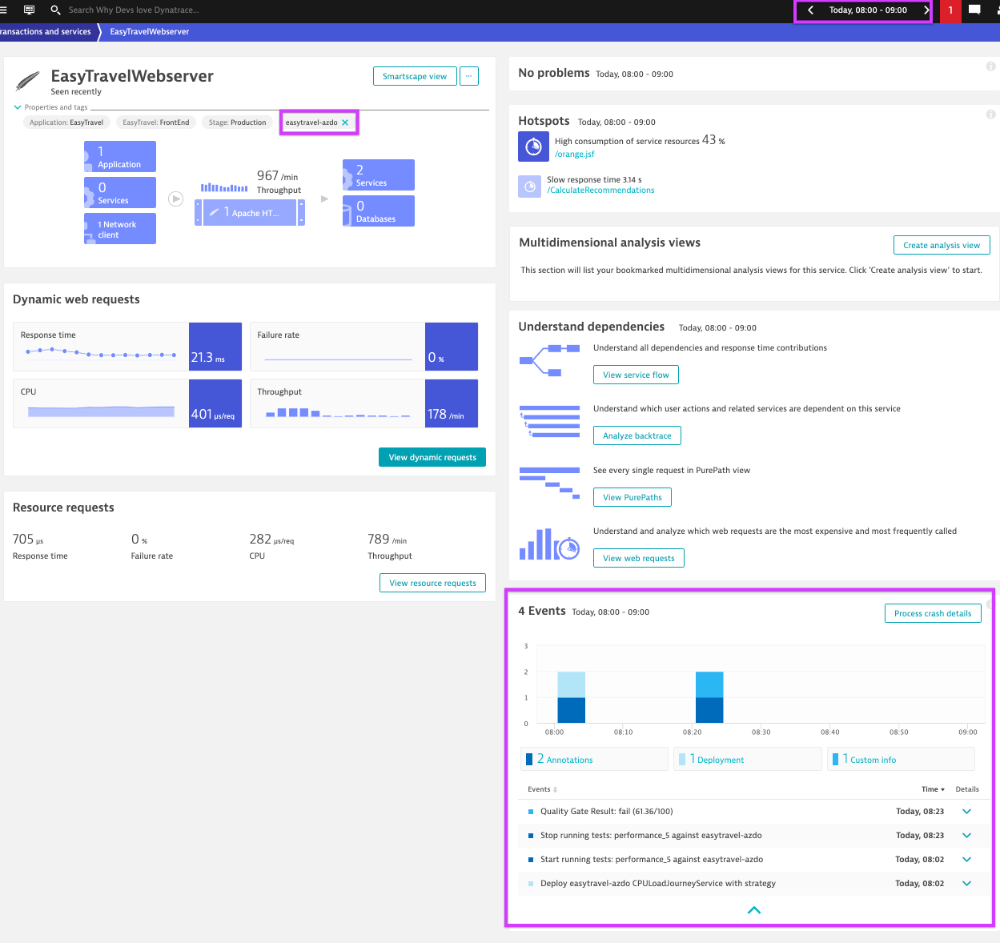
- Open the "EasyTravel Webserver"
- Show the response time, throughput and failure rate of the different test steps (without a chart)
UseCase CPULoadJourneyService
- We want to understand why the release CPULoadJourneySevice failed.
- Compare CPULoadJourneyService with build Zero (None) (filter the Loadtest)
- What do you notice first?
- Show the response time comparison of the different Loadtest Steps.
- Which steps are slower? why? what changed? Where? Which Service Team should fix which Methond and in which Class?
Here is a web-based Java decompiler in case you are keen in finding the issue in the code. Hint: Search for a loop
UseCase JourneyUpdateSlow
- Compare JourneyUpdateSlow with build Zero (filter the Loadtest)
- What do you notice first?
- Show the response time comparison of the different Loadtest Steps. Which steps are slower? why? what changed?
UseCase JourneyUpdateSlow - Solution
Please take 5 minutes and digest this information.
Dynatrace showed that the frontend calls 6 times the journeyService. 1 time the findLocations() (slight rt increase) and 5 times the findJourneys() with an increase of ~380 ms per call. The increase in findJourneys() is mostly in Lock/Wait time, letting us know also that there are new querys being executed. The contribution of the queries itself is not the problem (responsetime wise except from one new query with ~ 80ms) but the code, meaning the Database is performant but not the implementation. The rest of the time ~ +240ms is in _LockWait... time, meaning the calls are non performant and subsequent.
Please take a moment and digest the amount and level of insights Dynatrace gave you with a few clicks. If you know how to filter and where to click, it is absolutely insane the depth and amount of insights that Dynatrace provides OOTB to the Developers and DevOps. And again, we are just testing the Frontend URL and did not configure anything but how to record the loadtest (HTTP Headers).
UseCase Memory Allocation
- Which Release has a high GarbageCollection Impact? A Memory Allocation Problem? (it should be on the EasyTravel API)
- Identify the Process, API and Service.
- How big is the impact of the survived Memory? and which Objects/Classes were they?
- Can you explain why?
- Which test step was it?
UseCase CPU Analysis
- Which release is the most CPU intensive? Which Service? and which Methods?
- Can you explain why?
UseCase Thread Analysis
- Which release has a blocking Thread issue?
- Can you explain why?
UseCase BankService
Analysing the Impact on other Components
The BankJob
- Show the Database Impact of the Bankjob into the EasyTravel Database
- List all the SQLs
- Which SQL is being called the most?
- Which SQL returns the most rows?
- Which is the fastest SQL?
- Which is the slowest SQL?
- Is there an SQL modification on the Booking Table?
- if yes, which statement is it? If you found such statement. Let the team responsible know which Method and which Service is doing that modification.
- Which Method from the Bankjob is responsible?